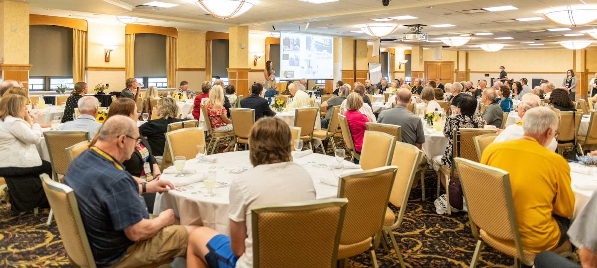
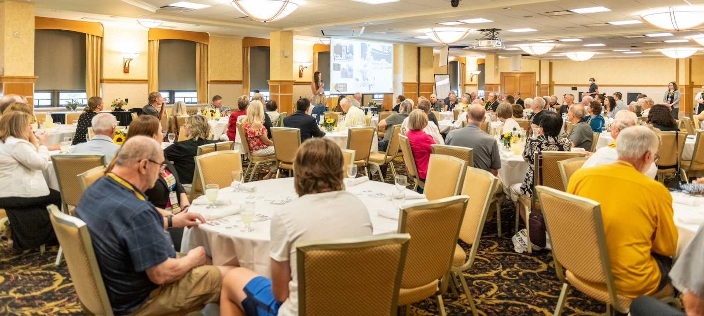

May 07–08, 2026 | Michigan Technological University, Houghton, MI
This NSF-supported workshop (Award No. 2541825) aims to identify challenges and opportunities in Research Data Management (RDM) within the construction research community. This interdisciplinary two-day event will bring together leading scholars, NSF program directors, and industry professionals to foster collaboration between construction and open science communities to promote FAIR data practices and advance NSF’s Public Access Initiative.
Discussion Themes: The workshop will explore topics such as FAIR data principles, metadata standards, data sharing ethics, collaboration infrastructures, education and training needs, and integration of open science into construction workflows.
Monday, May 07, 2026
| Time | Activity |
|---|---|
| 07:30 – 08:30 | Breakfast and Registration |
| 08:30 – 08:35 | Opening Remarks |
| 08:35 – 09:05 | Keynote Speech 1: Potentially delivered by NSF director |
| 09:05 – 09:40 | Keynote Speech 2: Potentially delivered by construction scholar |
| 09:40 – 10:10 | Keynote Speech 3: Potentially delivered by RDM and open-science scholar |
| 10:10 – 10:40 | Break and Coffee Session |
| 10:40 – 12:00 | Case Study of RDM in Construction (Delivered by PIs) |
| 12:00 – 13:00 | Lunch Break |
| 13:00 – 13:30 | Lightning Talks on Research Theme 1 |
| 13:30 – 14:00 | Research Theme 1 Open Discussions – Top 3-5 findings and recommendations |
| 14:00 – 14:30 | Lightning Talks on Research Theme 2 |
| 14:30 – 15:00 | Research Theme 2 Open Discussions – Top 3-5 findings and recommendations |
| 15:00 – 15:30 | Break and Coffee Session |
| 15:30 – 16:15 | Lightning Talks & Panel Discussion 1 – Topics from pre-conference surveys |
| 16:15 – 17:00 | Lightning Talks & Panel Discussion 2 – Topics from pre-conference surveys |
| 17:00 – 18:00 | TBD – Optional task or research lab visits |
| 18:00 – 19:30 | Reception |
Tuesday, May 08, 2026
| Time | Activity |
|---|---|
| 07:30 – 08:35 | Breakfast and Registration |
| 08:35 – 09:05 | Keynote Speech 4: Potentially delivered by librarian / academic publisher |
| 09:05 – 09:40 | Keynote Speech 5: Potentially delivered by journal editor |
| 09:40 – 10:10 | Keynote Speech 6: Potentially delivered by cyber-infrastructure scholar |
| 10:10 – 10:40 | Break and Coffee Session |
| 10:40 – 12:00 | Guided Activities – Topics TBD |
| 12:00 – 13:00 | Lunch Break |
| 13:00 – 13:30 | Lightning Talks on Research Theme 3 |
| 13:30 – 14:00 | Research Theme 3 Open Discussions – Top 3-5 findings and recommendations |
| 14:00 – 14:30 | Lightning Talks on Research Theme 4 |
| 14:30 – 15:00 | Research Theme 4 Open Discussions – Top 3-5 findings and recommendations |
| 15:00 – 15:15 | Wrap-up |
The 2026 NSF/CI PAOS Workshop will be hosted at the Memorial Union Building (MUB) at Michigan Technological University, Houghton, MI. The MUB is centrally located on campus and offers modern meeting facilities, dining services, and scenic views of the Keweenaw Peninsula.
 

Explore the Michigan Tech campus and Memorial Union Building location using the interactive map below:
Convenient accommodations within minutes of Michigan Technological University:
Address: 235 Hancock St, Hancock, MI 49930
Phone: +1 (906) 482-6111
Address: 1200 E Lakeshore Dr, Houghton, MI 49931
Phone: +1 (906) 482-2240
Convenient and trusted childcare facilities near Michigan Technological University for workshop participants with families:

Address: 500 MacInnes Dr, Houghton, MI 49931
Phone: +1 (906) 487-3528
Find essential information for traveling to Michigan Technological University and getting around Houghton, MI.
Address: 1400 Townsend Dr, Houghton, MI 49931
Phone: +1 (906) 487-1885
Parking Finder: ParkMobile App
Visitor parking is available near the Memorial Union Building (MUB) and other designated visitor lots.


Address: 23810 Airpark Blvd Suite 113, Calumet, MI 49913
Phone: +1 (906) 482-3970
Approx. 10 miles (15 min) from Michigan Tech

Address: 125 Ave G, Gwinn, MI 49841
Phone: +1 (906) 346-3308
Approx. 100 miles (2 hrs) from Michigan Tech

Address: 400 Riverhills Rd, Kingsford, MI 49802
Phone: +1 (906) 774-4870
Approx. 125 miles (2.5 hrs) from Michigan Tech
Address: 1002 2nd St, Hancock, MI 49930
Phone: +1 (906) 370-4094
Service: Enterprise Rent-A-Car
Explore scenic natural areas and local attractions around Houghton, MI.
Registration will open in early 2026. Participants will be able to register online through this website.
Meet the organizing team of the 2026 NSF/CI PAOS Workshop.
Chairperson
Michigan Technological University
Co-chair
Michigan Technological University
Michigan Technological University
Michigan Technological University
University of Wisconsin–Madison
University of Southern Mississippi
Binghamton University
Intelligent Fusion Technology, Inc.
Virginia State University
University of Notre Dame
PhD Scholar
Michigan Technological University
Graduate Student
Michigan Technological University